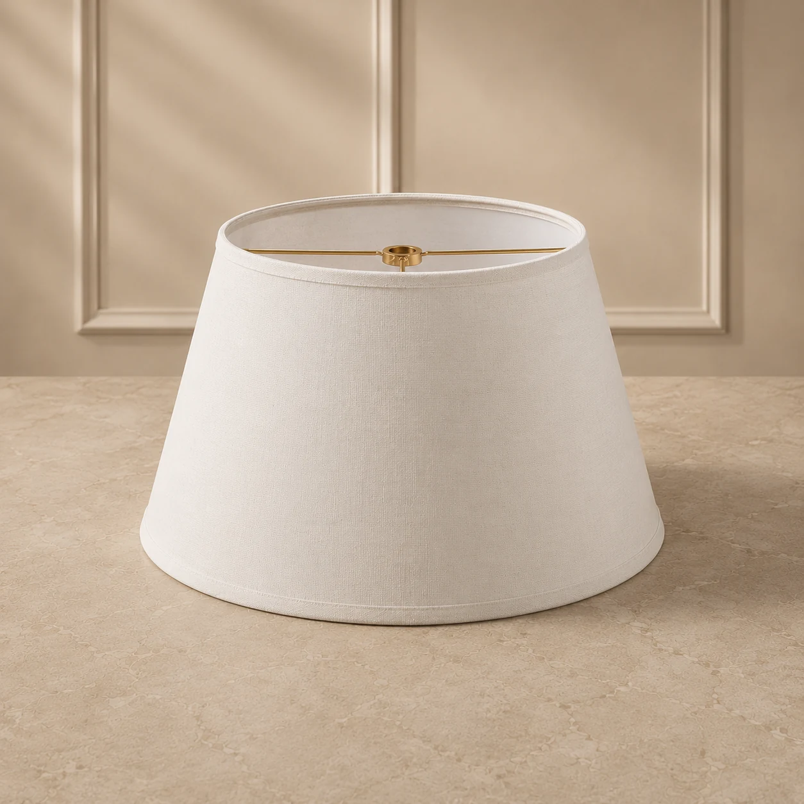

Imagem ilustrativaREF. 14 · Fabricação sob encomenda
Cúpula cônica off-white
Cônica / Empire · Tricoline Off White
Medida superior10 cm
Medida inferior35 cm
Altura23 cm
Preço atualizado
Consultando preço…
Valor calculado pelo sistema para a quantidade escolhida.
Quero outras medidas, cores ou tecidos ↗Produção: peça feita sob encomenda, sem promessa de pronta entrega.
Frete e pagamento: escolha a entrega no carrinho e pague com Mercado Pago.
Atenção: confira as medidas e o encaixe no guia de medidas.